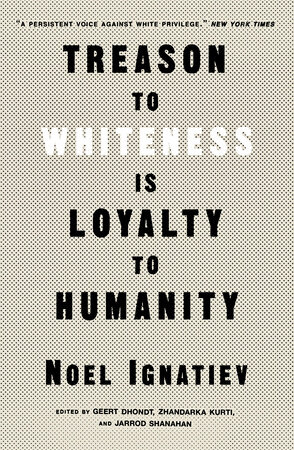
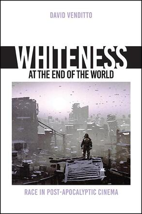
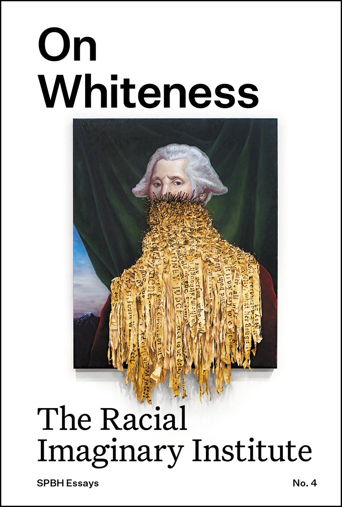
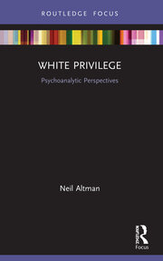
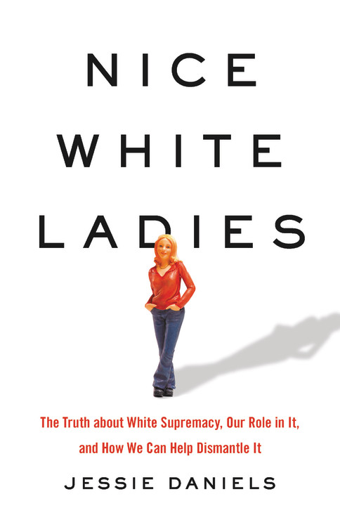
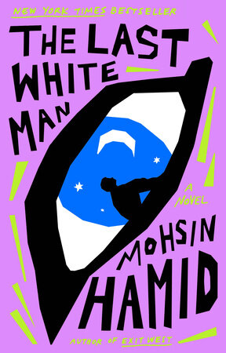

5:14 · 19 OPERE
Ladies and gentlemen, university education in the 21st century.
Il contenuto del filmato
Il video è un montaggio di titoli giornalistici, intestazioni di pagine universitarie e un elenco di libri in inglese. Accosta controversie su dichiarazioni attribuite a docenti, corsi e iniziative dedicate alla whiteness, citazioni provocatorie e titoli che denunciano discriminazioni contro persone bianche. Le schermate provengono, secondo le testate visibili, da fonti differenti e riportano date diverse: il montaggio non documenta un’unica università o un singolo episodio.
Leggi la sintesi completaRiduci la sintesi
La selezione produce un quadro polemico dell’ambiente accademico, ma la presenza di un titolo non autentica la citazione che contiene né consente di attribuire quelle posizioni a tutti i docenti o studenti. Corsi, progetti di ricerca, opinioni individuali e accuse di violenza richiedono distinzioni. Il cartello iniziale di Harvard Magazine, per esempio, isola brani di un testo che tratta la razza come costruzione sociale; nel contesto originale l’analogia con l’abolizione della monarchia distingue esplicitamente il superamento di un sistema dall’uccisione delle persone. Una parte del montaggio mostra risorse di Columbia e Harvard e un cartello con diciannove titoli di libri. I campioni finali tornano ad articoli su corsi e conflitti nei campus. La descrizione riguarda le schermate esaminate e il loro accostamento, non una conferma complessiva delle tesi suggerite.
Opere e riferimenti

Treason to Whiteness Is Loyalty to Humanity
Note sul riferimento
Copertina dell’edizione Verso, brossura, 2022-06-28, ISBN 9781839765018: Verso, brossura, 2022-06-28, ISBN 9781839765018
Raccolta di scritti di Noel Ignatiev a cura di Geert Dhondt, Zhandarka Kurti e Jarrod Shanahan; David R. Roediger firma la prefazione. I curatori e il prefatore non sono autori indistinti di tutti i saggi.
Titolo «Treason to Whiteness Is Loyalty to Humanity» leggibile nella colonna sinistra del cartello a 150,884 s. Autore ed edizione identificati dal catalogo editoriale, non dal cartello.
Dying of Whiteness: How the Politics of Racial Resentment Is Killing America's Heartland
Note sul riferimento
Copertina dell’edizione Basic Books, trade paperback, 2024-02-06, ISBN 9781541604483: Basic Books, trade paperback, 2024-02-06, ISBN 9781541604483
Opera del 2019. La copertina acquisita appartiene alla brossura aggiornata del 2024, con nuova prefazione, non a un esemplare identificato nel filmato.
Titolo «Dying of Whiteness» leggibile nella colonna sinistra del cartello a 150,884 s. Autore ed edizione identificati dal catalogo editoriale, non dal cartello.
White Malice: The CIA and the Covert Recolonization of Africa
Note sul riferimento
Copertina dell’edizione PublicAffairs, trade paperback, 2023-09-05, ISBN 9781541768307: PublicAffairs, trade paperback, 2023-09-05, ISBN 9781541768307
Opera del 2021; immagine della brossura statunitense PublicAffairs del 2023. Il sottotitolo qui riportato segue questa edizione, senza introdurre una seconda voce per varianti editoriali del titolo.
Titolo «White Malice» leggibile nella colonna sinistra del cartello a 150,884 s. Autore ed edizione identificati dal catalogo editoriale, non dal cartello.
White Too Long: The Legacy of White Supremacy in American Christianity
Note sul riferimento
Copertina dell’edizione Simon & Schuster, rilegato, 2020-07-28, ISBN 9781982122867: Simon & Schuster, rilegato, 2020-07-28, ISBN 9781982122867
Robert P. Jones è l’autore. La pagina comprende anche l’audiolibro letto da Holter Graham: il lettore non va confuso con l’autore. Copertina del rilegato 2020.
Titolo «White Too Long: The Legacy of White Supremacy in American Christianity» leggibile nella colonna sinistra del cartello a 150,884 s. Autore ed edizione identificati dal catalogo editoriale, non dal cartello.
The Trouble with White Women: A Counterhistory of Feminism
Note sul riferimento
Copertina dell’edizione Bold Type Books, trade paperback, 2023-05-02, ISBN 9781645036876: Bold Type Books, trade paperback, 2023-05-02, ISBN 9781645036876
Opera del 2021; copertina della brossura Bold Type Books del 2023. Brittney Cooper firma la prefazione, non è coautrice indistinta del testo di Schuller.
Titolo «The Trouble with White Women» leggibile nella colonna sinistra del cartello a 150,884 s. Autore ed edizione identificati dal catalogo editoriale, non dal cartello.
Dismantling Institutional Whiteness: Emerging Forms of Leadership in Higher Education
Note sul riferimento
Copertina dell’edizione Purdue University Press, PDF, 2022-10-15, ISBN 9781612497747: Purdue University Press, PDF, 2022-10-15, ISBN 9781612497747
Volume collettivo curato da M. Cristina Alcalde e Mangala Subramaniam, nella serie Navigating Careers in Higher Education. La copertina editoriale è associata al PDF ISBN 9781612497747; la brossura ha ISBN 9781612497723. Nessuna identificazione del formato nel cartello.
Titolo «Dismantling Institutional Whiteness» leggibile nella colonna sinistra del cartello a 150,884 s. Autore ed edizione identificati dal catalogo editoriale, non dal cartello.
White Supremacy Is All Around: Notes from a Black Disabled Woman in a White World
Note sul riferimento
Copertina dell’edizione Balance (Hachette Book Group), rilegato, 2024-02-06, ISBN 9780306831034: Balance (Hachette Book Group), rilegato, 2024-02-06, ISBN 9780306831034
Il catalogo corrente Hachette attribuisce il rilegato del 2024 all’imprint Balance. DHSc e MPH sono qualifiche dell’autrice, non parti del nome o altri autori. Edizione non identificata dal cartello.
Titolo «White Supremacy Is All Around» leggibile nella colonna sinistra del cartello a 150,884 s. Autore ed edizione identificati dal catalogo editoriale, non dal cartello.
White Evangelical Racism: The Politics of Morality in America
Note sul riferimento
Copertina dell’edizione The University of North Carolina Press, brossura, seconda edizione, 2024-10-29, ISBN 9781469681511: The University of North Carolina Press, brossura, seconda edizione, 2024-10-29, ISBN 9781469681511
Opera del 2021: copyright e dati CIP dell’edizione originale la datano 2021, distinti dalla data online OUP del 2020. Immagine della seconda edizione UNC Press del 2024, con nuova prefazione dell’autrice; non prova che il cartello si riferisca a questa edizione.
Titolo «White Evangelical Racism» leggibile nella colonna sinistra del cartello a 150,884 s. Autore ed edizione identificati dal catalogo editoriale, non dal cartello.
The Wages of Whiteness: Race and the Making of the American Working Class
Note sul riferimento
Copertina dell’edizione Verso, brossura, nuova edizione, 2022-11-22, ISBN 9781839768309: Verso, brossura, nuova edizione, 2022-11-22, ISBN 9781839768309
Prima edizione 1991; immagine della nuova brossura Verso del 2022. Gopal e Cleaver firmano contributi introduttivi, non sono coautrici del saggio. La pagina chiama il contributo di Gopal Preface, mentre la copertina lo presenta come New Introduction: mantenuto qui il ruolo generale di contributo introduttivo.
Titolo «The Wages of Whiteness» leggibile nella colonna sinistra del cartello a 150,884 s. Autore ed edizione identificati dal catalogo editoriale, non dal cartello.

Whiteness at the End of the World: Race in Post-Apocalyptic Cinema
Note sul riferimento
Copertina dell’edizione State University of New York Press, rilegato, 2022-07, ISBN 9781438489438: State University of New York Press, rilegato, 2022-07, ISBN 9781438489438
Volume della serie SUNY series, Horizons of Cinema. Copertina del rilegato SUNY Press del luglio 2022, ISBN 9781438489438; la brossura del gennaio 2023 ha ISBN 9781438489445. Il cartello non distingue le edizioni.
Titolo «Whiteness at the End of the World» leggibile nella colonna sinistra del cartello a 150,884 s. Autore ed edizione identificati dal catalogo editoriale, non dal cartello.
The Hidden Roots of White Supremacy: and the Path to a Shared American Future
Note sul riferimento
Copertina di un’edizione della stessa opera: Simon & Schuster, hardcover, 2023, ISBN 9781668009512. Edizione non identificata dal cartello.
Titolo abbreviato nel cartello; sottotitolo e autore confermati dal catalogo dell’editore.
Titolo «The Hidden Roots of White Supremacy» leggibile nella colonna destra del cartello a 150,884 s. Autore, ISBN ed edizione di riferimento riscontrati esternamente, non ricavati dal cartello.

On Whiteness
Note sul riferimento
Copertina di un’edizione della stessa opera: SPBH Editions, SPBH Essays n. 4, brossura, giugno 2022, ISBN 9781916041288; copertina riprodotta nel record Library Stack del 2024. Edizione non identificata dal cartello.
The Racial Imaginary Institute è il collettivo responsabile della raccolta, non il sottotitolo. I testi derivano dal simposio del 2018, mentre il catalogo dell’editore data il libro a giugno 2022. Il 2024 del record Library Stack non certifica una nuova prima edizione. Immagine dal record bibliografico Library Stack.
Titolo «On Whiteness: Racial Imaginary Institute» leggibile nella colonna destra del cartello a 150,884 s. Autore, ISBN ed edizione di riferimento riscontrati esternamente, non ricavati dal cartello.

White Privilege: Psychoanalytic Perspectives
Note sul riferimento
Copertina di un’edizione della stessa opera: Routledge, edizione in brossura ISBN 9780367503499. La scheda editoriale reca copyright 2021; l’opera digitale DOI 10.4324/9781003049593 risulta pubblicata online il 27 settembre 2020. Edizione non identificata dal cartello.
La data 2020 dell’opera digitale è attestata dal deposito DOI dell’editore; il copyright 2021 non va confuso con una diversa opera. La data specifica della tiratura in brossura illustrata non è certificata dal filmato. Titolo clinico e interpretazioni del libro non costituiscono diagnosi su gruppi o individui.
Titolo «White Privilege: Psychoanalytic Perspectives» leggibile nella colonna destra del cartello a 150,884 s. Autore, ISBN ed edizione di riferimento riscontrati esternamente, non ricavati dal cartello.

Nice White Ladies: The Truth about White Supremacy, Our Role in It, and How We Can Help Dismantle It
Note sul riferimento
Copertina di un’edizione della stessa opera: Seal Press, hardcover, 12 ottobre 2021, ISBN 9781541675865. Edizione non identificata dal cartello.
Il cartello abbrevia il sottotitolo; il titolo completo è riscontrato presso l’editore.
Titolo «Nice White Ladies: The Truth about White Supremacy» leggibile nella colonna destra del cartello a 150,884 s. Autore, ISBN ed edizione di riferimento riscontrati esternamente, non ricavati dal cartello.
Decentering Whiteness in the Workplace: A Guide for Equity and Inclusion
Note sul riferimento
Copertina di un’edizione della stessa opera: Berrett-Koehler, brossura, 24 ottobre 2023, ISBN 9781523005550. Edizione non identificata dal cartello.
Layla F. Saad firma la prefazione, non è coautrice indistinta del libro. La forma catalografica Janice Z. Gassam Asare indica la stessa autrice.
Titolo «Decentering Whiteness in the Workplace» leggibile nella colonna destra del cartello a 150,884 s. Autore, ISBN ed edizione di riferimento riscontrati esternamente, non ricavati dal cartello.
Me and White Supremacy: Combat Racism, Change the World, and Become a Good Ancestor
Note sul riferimento
Copertina di un’edizione della stessa opera: Sourcebooks, hardcover, 28 gennaio 2020, ISBN 9781728209807. Edizione non identificata dal cartello.
Robin DiAngelo firma la prefazione. Opera distinta dal successivo adattamento per giovani lettori e dai quaderni di esercizi; nessuno di questi è dedotto dal cartello.
Titolo «Me and White Supremacy» leggibile nella colonna destra del cartello a 150,884 s. Autore, ISBN ed edizione di riferimento riscontrati esternamente, non ricavati dal cartello.

The Last White Man: A Novel
Note sul riferimento
Copertina di un’edizione della stessa opera: Riverhead Books, brossura, 13 giugno 2023, ISBN 9780593538821; prima pubblicazione dell’opera il 2 agosto 2022. Edizione non identificata dal cartello.
È un romanzo. La copertina illustra la brossura del 2023 della stessa opera del 2022; il titolo nell’elenco non prova una determinata tiratura né trasforma la finzione narrativa in fatti storici.
Titolo «The Last White Man» leggibile nella colonna destra del cartello a 150,884 s. Autore, ISBN ed edizione di riferimento riscontrati esternamente, non ricavati dal cartello.
White Fear: How the Browning of America Is Making White Folks Lose Their Minds
Note sul riferimento
Copertina di un’edizione della stessa opera: BenBella Books, hardcover, 13 settembre 2022, ISBN 9781637740286. Edizione non identificata dal cartello.
Leah Lakins è indicata dalla copertina e dal distributore ufficiale come collaboratrice/autrice insieme a Roland Martin. La formula polemica del sottotitolo appartiene al titolo del libro e non viene assunta come diagnosi clinica di una popolazione.
Titolo «White Fear: How the Browning of America is Making White Folks Lose Their Minds» leggibile nella colonna destra del cartello a 150,884 s. Autore, ISBN ed edizione di riferimento riscontrati esternamente, non ricavati dal cartello.
Rich White Men: What It Takes to Uproot the Old Boys’ Club and Transform America
Note sul riferimento
Copertina di un’edizione della stessa opera: Legacy Lit, hardcover, 20 giugno 2023, ISBN 9780306925566. Edizione non identificata dal cartello.
Robin DiAngelo firma la prefazione e a.k. frimpong l’introduzione; questi contributi non li rendono coautori indistinti dell’intero libro.
Titolo «Rich White Men: What It Takes to Uproot the Old Boys’ Club and Transform America» leggibile nella colonna destra del cartello a 150,884 s. Autore, ISBN ed edizione di riferimento riscontrati esternamente, non ricavati dal cartello.
La descrizione riguarda alcune immagini del filmato. Il sonoro non è verificato; le didascalie visibili non attestano le parole pronunciate.